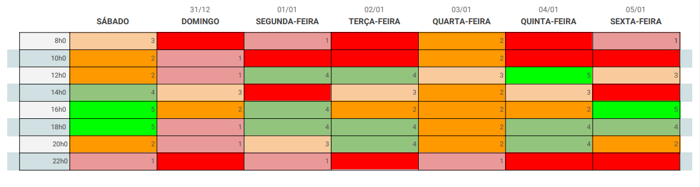

Planejamento
Heatmap

Para o planejamento do projeto, estamos utilizando o Google Calendar, onde agendamos todas as datas dos Pontos de Controle. Para melhor visualização, disponibilizaremos aqui o planejamento de cada semana.
Pré-rastreabilidade - 03/09
Realizado de 27/08 até 02/09.
| Tarefa | Participante(s) | Entrega | Entrega Prevista |
|---|---|---|---|
| Rich Picture | Todos os membros. | 30/08 | 01/08 |
| Wiki | Samuel Pereira. | 02/09 | 01/08 |
| Planejamento | Luís Henrique. | 02/09 | 01/08 |
Elicitação e Priorização - 12/09
Realizado de 03/09 até 12/09.
Adicionamos novas técnicas e melhorias após o Ponto de Controle realizadas até 25/09.
|Tarefa|Participante(s)|Entrega | Entrega
Prevista
|--|---------|------|---|
|Entrevista|Todos os membros| 25/09| 25/09
|Análise de Protocolo|Todos os membros|23/09| 25/09
|Introspecção|Todos os membros|11/09| 11/09
|Observação Participativa|Todos os membros|05/09| 11/09
|Questionário|Todos os membros| Ainda no ar | Fim da disciplina
|MosCow|Todos os membros|10/09| 11/09
Modelagem - 1/10
26/09 - 30/09
| Tarefa | Participante(s) | Entrega | Entrega Prevista |
|---|---|---|---|
| Léxicos | Luís Henrique | 29/09 | 29/09 |
| Cenários | Eduardo | 30/09 | 29/09 |
| Diagramas | Samuel | 29/09 | 29/09 |
| Casos de Uso | Micaella | 29/09 | 29/09 |
| Especificação Suplementar | Sofia | 29/09 | 29/09 |
Modelagem - 17/10
30/09 - 15/10
| Tarefa | Participante(s) | Entrega | Entrega Prevista |
|---|---|---|---|
| Backlogs | Micaella e Samuel | 15/10 | 15/10 |
| Histórias de Usuário | Micaella e Samuel | 15/10 | 15/10 |
| NFR | Eduardo, Luís e Sofia | 15/10 | 15/10 |
Verificação - 17/10
17/10 - 31/10
| Tarefa | Participante(s) | Entrega | Entrega Prevista |
|---|---|---|---|
| Análise de Protocolo | Eduardo | 30/10 | 30/10 |
| Entrevista | Luís | 30/10 | 30/10 |
| Casos de Uso | Sofia | 30/10 | 30/10 |
| Histórias de Usuário | Eduardo | 30/10 | 30/10 |
| Backlog | Sofia | - | 30/10 |
| Cenários | Micaella | 30/10 | 30/10 |
| Especificação Suplementar | Luís | 30/10 | 30/10 |
| Diagramas de Casos de Uso | Sofia | 30/10 | 30/10 |
| Léxicos | Micaella | 30/10 | 30/10 |
| NFR's | Samuel | 30/10 | 30/10 |
Validação - 17/10
17/10 - 31/10
| Tarefa | Participante(s) | Entrega | Entrega Prevista |
|---|---|---|---|
| Análise de Protocolo | Eduardo | - | 30/10 |
| Entrevista | Luís | - | 30/10 |
| Casos de Uso | Sofia | - | 30/10 |
| Histórias de Usuário | Eduardo | - | 30/10 |
| Backlog | Sofia | - | 30/10 |
| Cenários | Micaella | - | 30/10 |
| Especificação Suplementar | Luís | - | 30/10 |
| Diagramas de Casos de Uso | Sofia | - | 30/10 |
| Léxicos | Micaella | - | 30/10 |
| NFR's | Samuel | - | 30/10 |